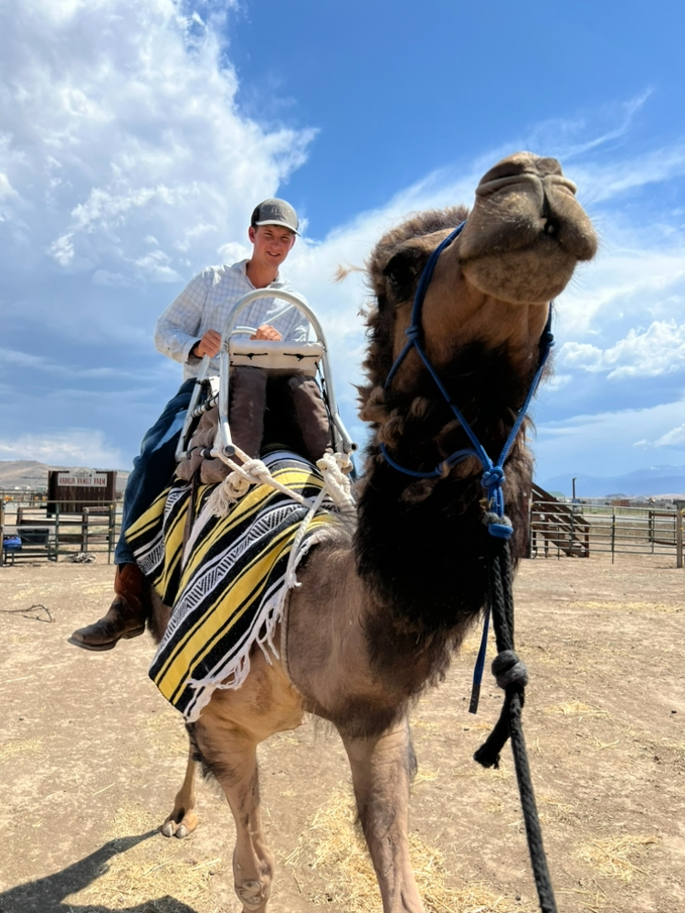

My name is Kaleb Andelin, and I grew up on my family's agritourism farm in Reno, Nevada. I like riding mountain bikes and playing the piano and enjoy the outdoors. I am a member of the Churh of Jesus Christ of Latter-day Saints and even had the privilege of serving a mission in Santiago, Chile. I lived there for two years teaching and inviting others to accept Jesus Christ into their lives.
Currently I am a student at Brigham Young University-Idaho where I'm pursuing a degree in cybersecurity. I especially enjoy participating in CTFs and learning about news and updates in the world of cybersecurity. After college, I want to apply my cybersecurity knowledge to the farm to protect the family business's digital assets, and finding ways to improve farm operations with technology integration.